Abschlusspräsentation
OpenDataHub
Teilen, Beziehen, und Konvertieren von Daten
Bachelorarbeit FS15 HSR
Remo Liebi, Fabio Scala, Christoph Hüsler
Betreuer: Prof. S. Keller, Experte: C. Eisenhut
Inhalt
- Aufgabenstellung
- Analyse
- Design und Implementation
- Resultate und Ausblick
- Demo
- Projekt- und Qualitätsmanagement
- Fragen
Aufgabenstellung
Motivation
- Methodenfreiheit → unterschiedliche Software
- Viele Kommunikationspartner
- Unterschiedliche Schemata
→ Datenaustausch schwierig
Heute
- Zwischenmodell
- Austausch wird mit jedem Partner neu implementiert
- Schwierig für "Laufkundschaft"
Aufgabe
- dat
- Untersuchen und Dokumentieren
- OpenDataHub
- Datenaustausch
- Schematransformation
- Formatkonversion
Analyse
Anforderungen
[...] zentrales Portal (= "OpenDataHub") [...], über dieses sich Daten offen teilen, beziehen und konvertieren lassen wobei sich die Beteiligten nicht um die Formatkon- version und Schematransformation kümmern müssen: Die Datenlieferanten liefern ihre Daten in ihrem Format und Schema und die Nutzer beziehen es ihrerseits, wie sie wollen - vorausgesetzt, die entsprechende Formatkonversion und Schematransformation existiert.
Use-Cases
- Postadressen
- Schematransformation
- Gebäudeadressen
- Integration mehrerer Datenquellen
- Verknüpfen von Adressbuch mit dazugehörenden Gebäudeeingängen aus MOPublic (Basel)
- TROBDB: Verkehrshinderniss-Datenbank
- Integration diverser Datenquellen
Existierende Lösungen
dat: Datenspeicherung
Dat is a version-controlled, decentralized data tool for collaboration between data people and data systems.
- Basiert auf node.js, LevelDB
- Limitationen der Alpha-Version (6.9.6):
- 1 Tabelle pro Instanz
- Schema-los
- One-Way Sync - kein Konfliktmanagement
Status 24. Juni: 7.0.0-pre3 - soll oben beschriebene Probleme beheben
CKAN: Datenaustausch
"CKAN is a powerful data management system that makes data accessible – by providing tools to streamline publishing, sharing, finding and using data."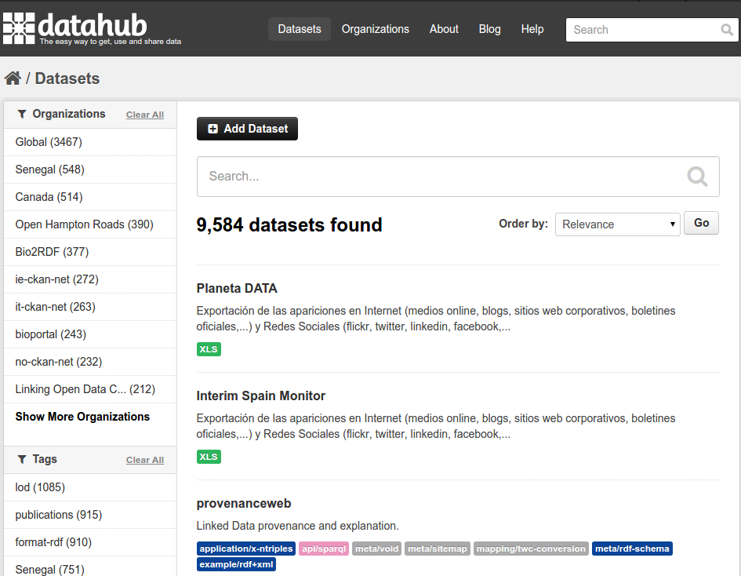
CKAN: Datenaustausch
- Reine data sharing platform
- Keine Transformation - weder Schema noch Format
- Sehr gute Metadaten-Verwaltung
Basis für opendata.admin.ch, datahub.io, opendatahub.it, ...
Erst spät entdeckt
Yahoo! Pipes: Transformation
Pipes is a powerful composition tool to aggregate, manipulate, and mashup content from around the web.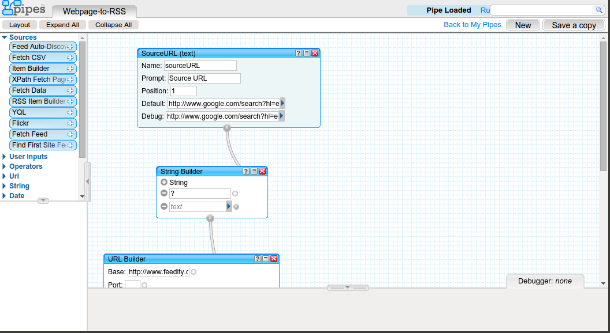
Yahoo! Pipes: Transformation
- Intuitives UI für Datenflüsse
Discontinued (30.9.2015)
Pentaho Kettle: Transformation
Data Integration (or Kettle) delivers powerful Extraction, Transformation, and Loading (ETL) capabilities, using a groundbreaking, metadata-driven approach.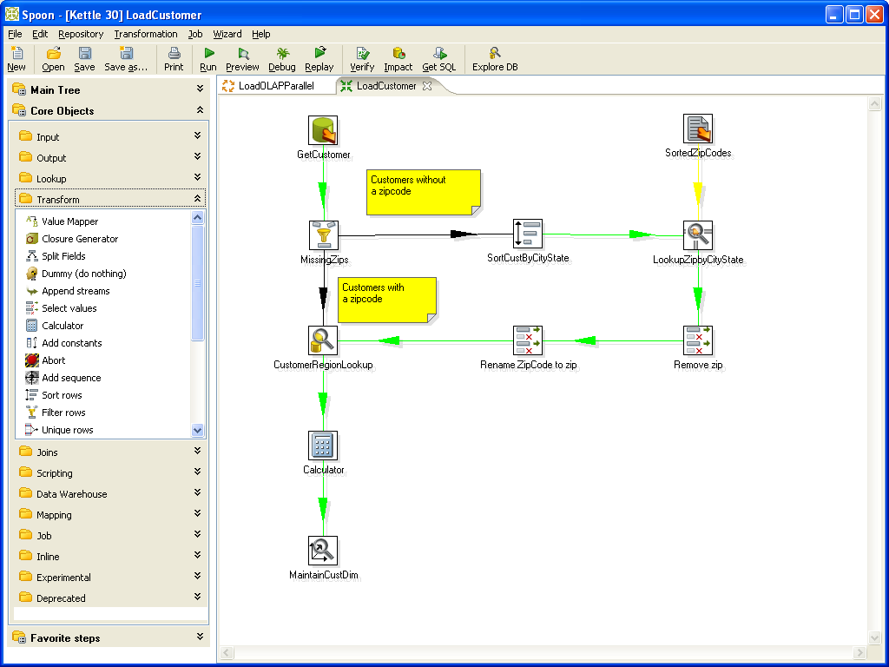
Pentaho Kettle: Transformation
- Desktop-basiertes ETL-Tool
- Unterstützung für Geo-Daten mit GeoKettle
FME: Transformation
- Kommerzielle Software zur Bearbeitung von Geo-Daten
- info.geopol.ch bietet Web-Frontend an
Nicht-funkionale Anforderungen
- Machbarkeitsstudie → Performance relevant, aber nicht oberste Priorität
- Programmiersprache: Python
- Deployment via WSGI
- PostgreSQL oder SQLite, falls Datenbanken verwendet werden
- Qualität: Unit-Tests, Sphinx-kompatible Doku-Kommentare, PEP-8
Domain-Modell
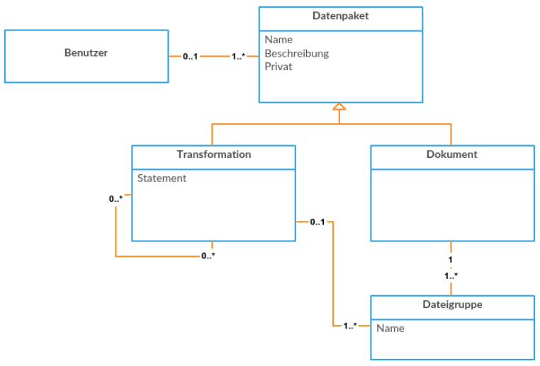Implementation
- Python 2.7
- AngularJS
- TypeScript
- GDAL
Architektur
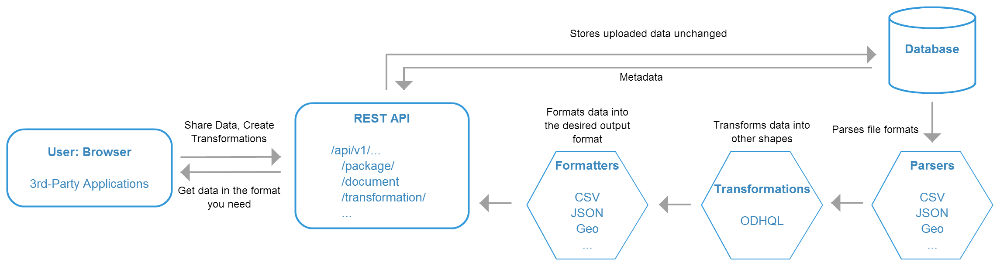Django Models
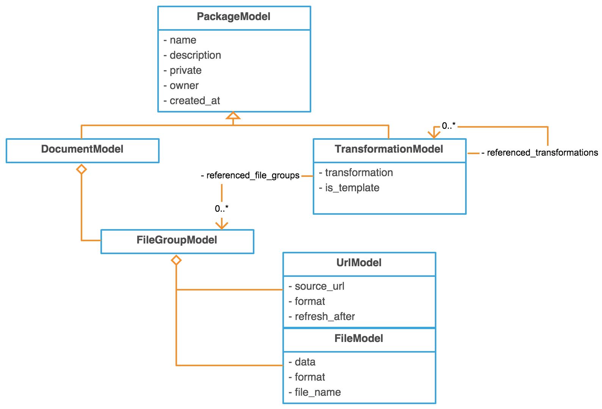Internes Format
Parser – Daten einlesen
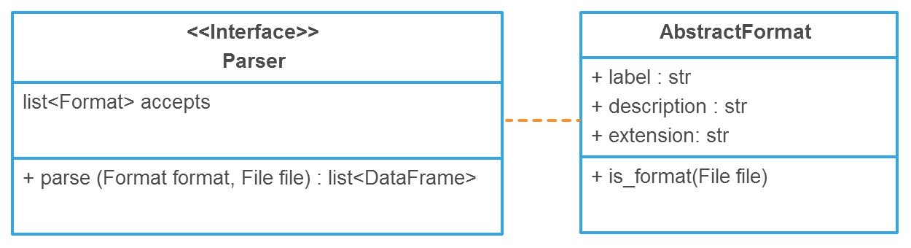- Nativ
- (Geo)CSV, Excel, XML, (Geo)JSON, KML, ESRI Shapefile
- ogr2ogr
- GML, WFS, Interlis 1
ODHQL – Daten transformieren
OpenDataHub Query Language
- Subset von SQL (SELECT)
Syntax Parsing
- Parser basiert auf pyparsing
- "Interne DSL", Code gleicht BNF
Interpreter
- Performance durch Vektor-Operationen
- Kompakter, performanter Core
- Funktionale Erweiterung durch ODHQL Funktionen 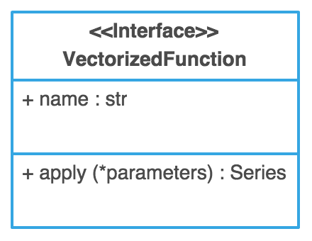
Formatter – Daten konvertieren
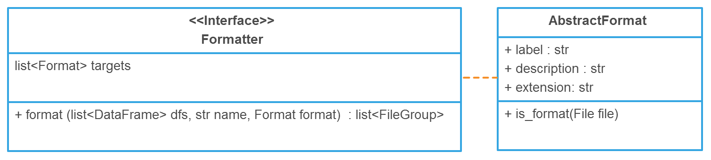- Gegenstück zu Parser
- Implementierte Formate analog Parser
ogr2ogr "Workaround"
- Fehlende Formate temporär über ogr2ogr
- Besser: GDAL Python API
Erweiterbarkeit
- "plugins" Verzeichnis für auto-loading
- Neue Formate, Parser und Formatter
- ODHQL Funktionen
Authentication
OAuth2
- Account-Handling vereinfachen
- Benutzerverwaltung an Dritte delegieren

Token Based Authentication
- Auf API-Ebene Zugriffsrechte durchsetzen
- AngularJS 'kennt' zugriffsrechte
Frontend
- Beispiel-Anwendung für API
- Unterscheidung Template / Transformation
- Error Handling
Resultate
dat
- Limitationen der Alpha-Version (6.9.6):
- 1 Tabelle pro Instanz
- Schema-los
- One-Way Sync - kein Konfliktmanagement
- Beschluss 25.2.: dat wird nicht verwendet
OpenDataHub
Siehe Demonstration
Probleme & Pitfalls
- GDAL
- SegFault bei Interlis 1 in v1.11.x
- GeoPackage-Support
- Treiber-Qualität sehr unterschiedlich
Ausblick
Demo
Projekt
Vorgehensmodell – Scrum

- Iterativ, 2 Wochen
- Daily Standups um 10:00
- Continuous Integration & Deliverables
- Wöchentlicher "Kundenkontakt"
Planung
- 1. Woche: Kick-off
- Iterativ
- Analyse
- Design
- Implementation
- Feature-Freeze
- 1 Bugfixing-Sprint
- Code-Freeze
- 1 Dokumentations-Sprint
Planung – JIRA
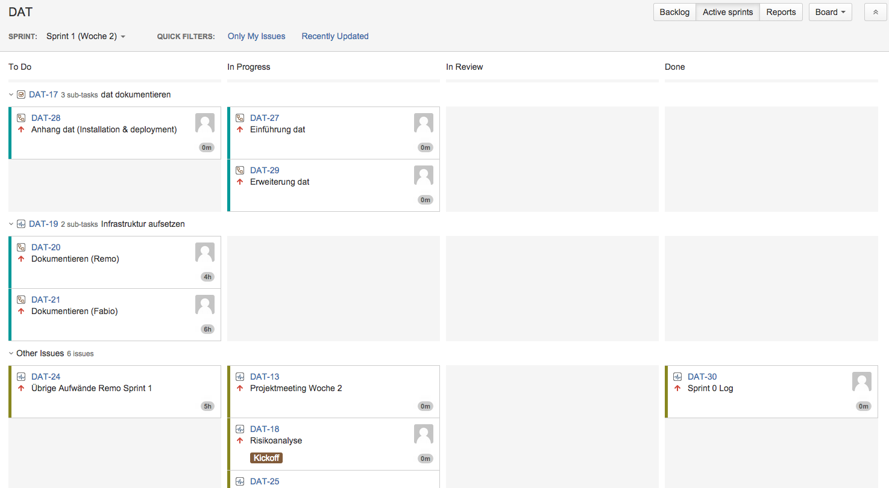Planung
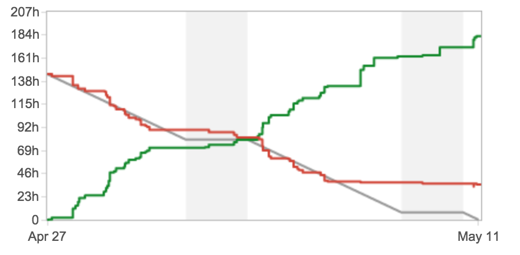Qualität – Reviews
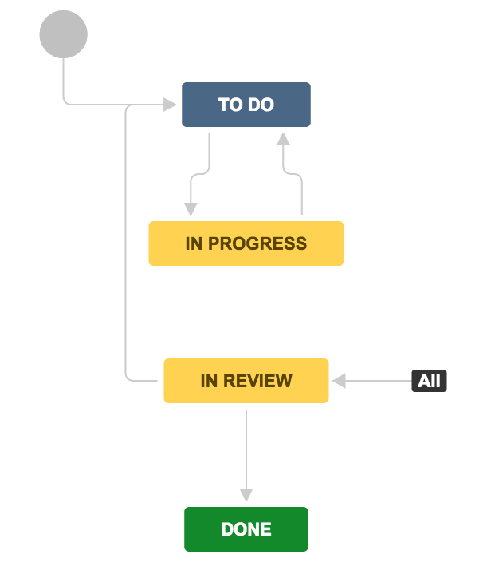Qualität – Testing
- > 300 Python Unit Tests
- Walkthrough als UI-Test
- Continuous Integration mittels Travis und Heroku
- Diverse Linting- & Metrik-Checks
Infrastruktur
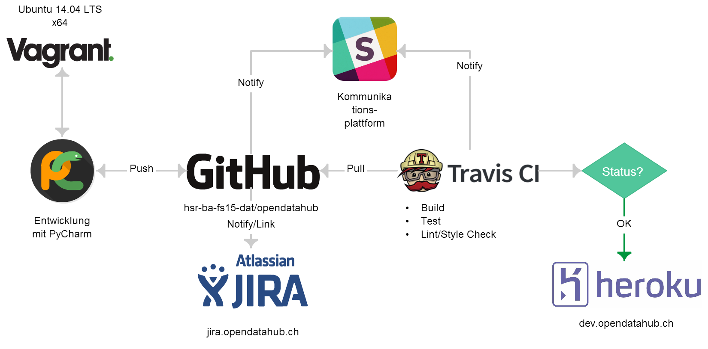Stunden
16.02.2015 – 12.06.2015
| Soll | 960h |
|---|---|
| Ist | 1404.3h |
| Remo Liebi | 491.0h |
|---|---|
| Chrisrtoph Hüsler | 436.5h |
| Fabio Scala | 476.8h |
Fragen?
Risiken
- TODO: not sure ob ich das zeige, scheint mir overkill, evt backup slide erstellen